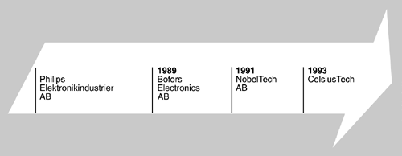
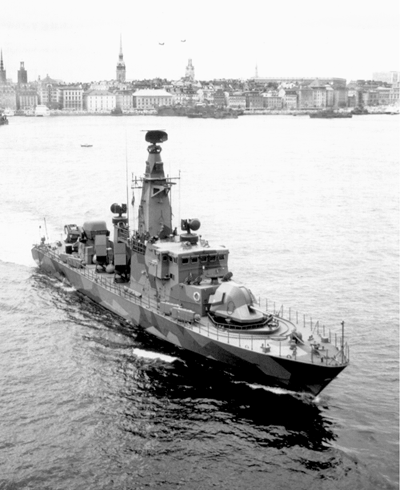
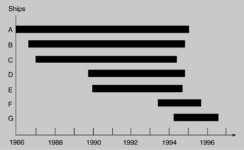
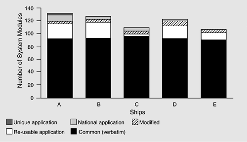
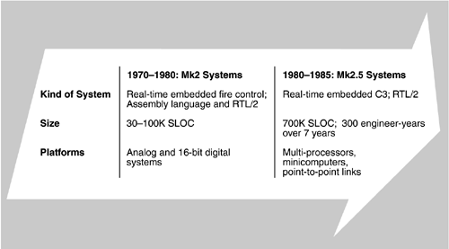
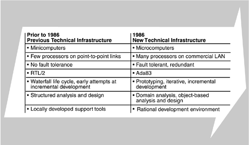
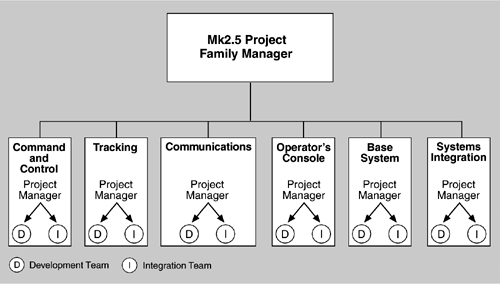
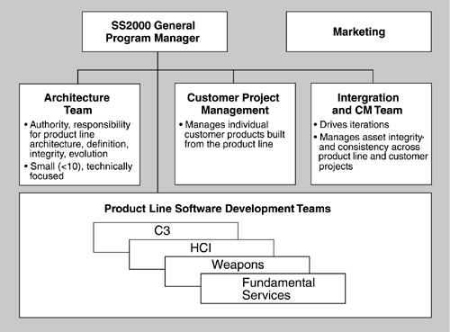
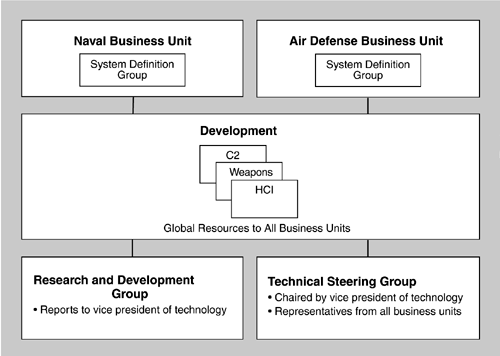
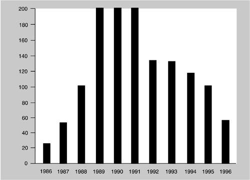

| [ Team LiB ] |
|
15.1 Relationship to the Architecture Business CycleCelsiusTech has long been known as a leading supplier of command-and-control systems within Sweden's largest, and one of Europe's leading, defense industry groups, which also includes Bofors, Kockums, FFV Aerotech, and Telub. At the time they developed the systems that are the subject of this chapter, CelsiusTech was composed of three companies: CelsiusTech Systems (advanced software systems), CelsiusTech Electronics (defense electronics), and CelsiusTech IT (information technology systems). It employed approximately 2,000 people and had annual sales of 300 million U.S. dollars. Their main site is near Stockholm, with subsidiaries located in Singapore, New Zealand, and Australia. This study focuses on CelsiusTech Systems (CelsiusTech for short), whose focus includes command, control, and communication (C3) systems, fire control systems,[1] and electronic warfare systems for navy, army, and air force applications. The organization has undergone several changes in ownership and name since 1985 (see Figure 15.2). Originally Philips Elektronikindustrier AB, the division was sold to Bofors Electronics AB in 1989 and reorganized into NobelTech AB in 1991. It was purchased by CelsiusTech in 1993. Although senior management changed with each transaction, most of the mid-and lower-level management and the technical staff remained, thus providing continuity and stability.
Figure 15.2. CelsiusTech Systems' corporate evolution THE SHIP SYSTEM 2000 NAVAL PRODUCT LINECelsiusTech's naval product line, known as Ship System 2000 (internally as Mk3), provides an integrated system that unifies all weapons, command-and-control, and communication systems on a warship. Typical system configurations include 1 million to 1.5 million lines of Ada code distributed on a local area network (LAN) with 30 to 70 microprocessors. A wide variety of naval systems, both surface and submarine, have been or are being built from the same product line. These include the weapons, command-and-control, and communications portions of the following:
The Naval Systems division has sold more than 50 of its Mk3 naval systems to seven countries. Figure 15.3 shows a Royal Swedish Navy multi-role corvette of the Göteborg class during a visit to Stockholm harbor. On top is the C/X-band antenna of the surveillance and target indication radar. Forward and aft of this, on top of the superstructure, are the two fully equipped fire control radar and optronic directors from CelsiusTech. Figure 15.3. Swedish multi-role Corvette of the Göteborg class featuring a CelsiusTech command-and-control system.Photo from Studio FJK; reproduced with permission.  Systems built from the product line vary greatly in size, function, and armaments. Each country requires its own operator displays on different hardware and in different presentation languages. Sensors and weapons systems, and their interfaces to the software, also vary. Submarines have different requirements than surface vessels. Computers in the product line include 68020, 68040, RS/6000, and DEC Alpha platforms. Operating systems include OS2000 (a CelsiusTech product), IBM's AIX, POSIX, Digital's Ultrix, and others. The SS2000 product line supports this range of possible systems through a single architecture, a single core asset base, and a single organization. ECONOMICS OF PRODUCT LINES: AN OVERVIEW OF CELSIUSTECH'S RESULTSIn this section we discuss CelsiusTech's results in building complex software-intense systems. Shrinking SchedulesFigure 15.4 shows the status and schedules for later systems under development from the CelsiusTech product line. Ships A and B were contracted for at the same time and, as we will see, caused CelsiusTech to move to a product line approach. System A is the basis of the product line. Customer project A ran almost nine years, although functional releases were running on the designated ship by late 1989. System B, the second of the two original projects, required approximately seven years to complete and is similar to the previous non-product-line Mk2.5 system. It was built in parallel with system A, validating the product line. While neither system individually showed greater productivity, CelsiusTech was able to build both (and the product line) with roughly the same number of staff as for a single project. Figure 15.4. Product schedules Systems C and D were started after much of the product line existed, with a correspondingly shortened completion time. Systems E and F show a dramatic schedule reduction because they are fully leveraging the product line assets. CelsiusTech reports that the last three ship systems were all predictably on schedule. Code Re-useWhile the production schedules show time to market for a product, they do not indicate how well the systems use a common asset base. Figure 15.5 shows the degree of commonality across the CelsiusTech naval systems. On average, 70% to 80% consist of elements used verbatim (i.e., checked out of a configuration control library and inserted without code modification). Figure 15.5. Commonality across CelsiusTech naval systems Using Core Assets to Expand the Business AreaCelsiusTech has expanded its business into a related area that takes advantage of the architecture and other core assets that were originally developed for naval uses. STRIC, a new air defense system for the Swedish Air Force, embraces the abstraction that a ground platform is a ship whose location does not change very often and whose pitch and roll are constantly zero. Because of the flexibility (amenability to change) of the SS2000 architecture and product line, CelsiusTech was able to quickly build STRIC, lifting 40% of its elements directly from the SS2000 asset base. (See the sidebar Mastering Abstraction at CelsiusTech.) This demonstrates one of the feedback links in the ABC: The existence of the SS2000 product line and its architecture enabled new business opportunities.
WHAT MOTIVATED CELSIUSTECH?To understand why CelsiusTech made the decision to develop a product line and what actions were required, it is important to know where it began. Prior to 1986, the company developed more than 100 systems, in 25 configurations, ranging in size from 30,000 to 700,000 source lines of code (SLOC) in the fire control domain. From 1975 to 1980, CelsiusTech shifted its technology base from analog to 16-bit digital, creating the so-called Mk2 systems. These tended to be small, real-time, and embedded. The company progressively expanded both system functionality and expertise with real-time applications in the course of building and delivering 15 systems. From 1980 to 1985, customer requirements were shifting toward the integration of fire control and weapons with command and control, thus increasing the size and complexity of delivered systems. The Mk2 architecture was expanded to provide for multiple autonomous processing nodes on point-to-point links, resulting in Mk2.5. Mk2.5 systems were substantially larger, in both delivered code (up to 700,000 SLOC) and number of developers (300 engineer-years over 7 years). Conventional development approaches were used for Mk2.5. These had served the company well on the smaller Mk2 systems, but difficulties in predictable and timely integration, cost overruns, and schedule slippage resulted. Such experiences were painful, but they were important lessons for CelsiusTech. The company gained useful experience in the elementary distribution of real-time processes onto autonomous links and in the use of a high-level, real-time programming language (in this case, the Pascal-like RTL/2). Figure 15.6 shows the systems built by CelsiusTech prior to 1985. Figure 15.6. Systems built by CelsiusTech prior to 1985 In 1985, a defining event for CelsiusTech (then Philips) occurred. The company was awarded two major contracts simultaneously—one for the Swedish Navy and one for the Danish Navy. Requirements for both ships indicated the need for systems larger and more sophisticated than the Mk2.5s, which had suffered from schedule and budget difficulties. Having to build two even larger systems, let alone in parallel, presented management and senior technical staff with a severe dilemma. Clearly, the development technologies and practices applied on the Mk2.5 system would not be sufficient to produce the new systems with any reasonable certainty of schedule, cost, and required functionality. Staffing requirements alone would have been prohibitive. This situation provided the genesis of a new business strategy that recognized the potential business opportunity of selling and building a series, or family, of related systems rather than some number of specific systems. Thus began the SS2000 product line. Another business driver was the recognition of a 20-to 30-year lifespan for naval systems. During that time, changes in threat requirements and in technology advances would have to be addressed. The more flexible and extensible the product line, the greater the business opportunities. These business drivers or requirements forged the technical strategy. The technical strategy would need to provide a flexible and robust set of building blocks to populate the product line from which new systems could be assembled with relative ease. As new system requirements arose, new building blocks could be added to the product line to sustain its business viability. In defining the technical strategy, an assessment of the Mk2.5 technology infrastructure indicated serious limitations. A strategic decision was made to create a new-generation system (the Mk3) that would include new hardware and software and a new supporting development approach. This would serve as the infrastructure for new systems development for the next decade or two. EVERYTHING WAS NEWCelsiusTech's decision to convert its business strategy to a product line approach coincided with a time of high technology flux. This meant that, to implement the technical strategy for the SS2000 product line, virtually all aspects of the hardware, the software, and development support would have to change. Thus, the hardware shifted from VAX/VMS minicomputers to Motorola 68000-series microcomputers. Whereas the Mk2.5 systems consisted of a small number of processors on point-to-point links, the SS2000 products have a large number of highly distributed processors with fault-tolerant requirements. The software life-cycle approach shifted from RTL/2-based structured analysis/design and waterfall development to Ada83 with more object-based and iterative development processes. Development support migrated from custom, locally created and maintained development tools to a large, commercially supplied environment. The major technical differences are summarized in Figure 15.7. Figure 15.7. Changing technical infrastructures ANALYSIS OF THE BUSINESS CONTEXTThe CelsiusTech experience reveals several factors that played an important role in the establishment of the SS2000 product line, some of which were advantages, some inhibitors. Ownership ChangesWhile it is routine to buy, sell, and restructure companies, the impact on an organization attempting to adopt significantly different business and technical strategies can be devastating. Typically, management changes associated with company ownership transactions are sufficient to stop any transition or improvement efforts under way (as observed by Petronius Arbiter over two millennia ago). That this did not happen at CelsiusTech can be attributed either to strong and far-sighted top management or to top management's preoccupation with the other issues. Since CelsiusTech changed hands several times during this period, the latter explanation is more likely. It is clear that middle management had a strong commitment to a product line and were allowed to proceed unfettered by top management, who might otherwise have been hesitant to approve the necessary upfront investments. Normally a reorganization disrupts the entire organization. In the CelsiusTech case, the effects of the reorganizations and changes of ownership were buffered by middle management. NecessityThe award of two major naval contracts in 1986, ostensibly a reason for celebration, was regarded as a crisis by CelsiusTech. Management immediately realized that they had neither the technical means nor the personnel resources to simultaneously pursue two large development efforts, each pioneering new technologies and application areas. Since all CelsiusTech contracts are fixed price, large-scale failure meant large-scale disaster. Indeed, less challenging systems had been over budget, past schedule, hard to integrate, and impossible to predict. CelsiusTech was driven to the product line approach by circumstances; they were compelled to attempt it because their viability was clearly at stake. The fact that this period was also one of major technological change made it much more difficult to separate the costs associated with product line changes from those associated with adopting new technology. Technology ChangesIn 1986, all the chosen technologies were immature, with limited use in large industrial settings. Big, real-time, distributed systems making extensive use of Ada tasks and generics were envisioned but at the time were unprecedented. Moreover, object-based development for Ada was still a theoretical discussion. From 1986 to 1989, then, CelsiusTech was coping with the following:
These maturation issues significantly increased the time required to create the product line. An organization making the same development paradigm shift today would be in a much better position, with microcomputers, networks, portable operating systems, open systems standards, object-based development methods, Ada (or other programming languages appropriate to the domain and platforms), performance engineering, distributed systems technology, real-time operating systems, real-time analysis tools, large-project support environments, and large-project process assistants. These technologies are all either mature or at least usable and readily available. Also, much more is known about building and fielding software product lines (see Chapter 14). CelsiusTech estimates that up to one-third of its initial technology investment was spent building assets that can now be purchased commercially. CELSIUSTECH'S ORGANIZATIONAL STRUCTURECelsiusTech's organizational structure and practices did not remain constant over the ten-year period covered here, but migrated through several distinct structures. The kind of knowledge and skills required of the staff also changed. Project Organization Prior to 1986The naval command-and-control system (Mk2.5) development was headed by a project manager who used the services of various functional areas, such as weapons or C3, to develop major segments of system capability. Figure 15.8 shows the organizational structure for the Mk2.5 project. Each functional area (command-and-control, tracking, etc.) was led by a project manager who had direct authority for staff resources and for all system development activities through release to system integration. Figure 15.8. Mk2.5 project organization, 1980–1985 CelsiusTech found that this compartmentalized arrangement fostered a mode of development characterized by the following:
SS2000 Organization Late 1986 to 1991With the introduction of the SS2000 product line in late 1986 came a number of organizational changes from the Mk2.5 project organization. Figure 15.9 shows the organizational structure CelsiusTech used from late 1986 until 1991. A general program manager designated to lead the program was responsible for both creation of the product line and delivery of customer systems built from it. CelsiusTech sought to remedy the problems associated with the compartmentalized structure of the past by creating a strong management team focused on product line development as a company asset rather than on "empire building." To this end, functional area managers now reported directly to the general program manager. Developers were assigned to functional areas—weapons, C3, or human–computer interface (HCI), common services (used by the functional areas), and the interface to the various hardware and operating systems (called the Base System). Figure 15.9. SS2000 organization, 1987–1991 A small, technically focused architecture team with total ownership and control was created, reporting directly to the general program manager. CelsiusTech determined that the success of a product line hinged on a stable yet flexible architecture, one that was visible throughout the organization and vested with authority from the highest levels of management. In this way, the company reorganized itself to take advantage of the ABC: Architecture had to be at the heart of their new approach, and the architecture in turn changed important aspects of the organization. The coordinated definition and management of multiple releases was central to the creation of a product line. To better support their release management, CelsiusTech combined software system integration and configuration management into a new group, reporting directly to the general program manager. Both the architecture team and the integration–configuration management group were novel approaches for CelsiusTech and were instrumental in the creation of the SS2000 product line. The architecture team was responsible for the initial development and continued ownership and control of the product line architecture. This ensured design consistency and design interpretation across all functional areas. Specifically, the architecture team had responsibility and authority for the following:
The first iteration of the architecture was produced in two weeks by two senior engineers with extensive domain experience. It remains the framework for the existing product line, containing organizing concepts, layer definition, identification of approximately 125 system functions (out of the current 200 or so) and their allocation to specified layers, and the principal distribution and communication mechanisms. After completion of the first iteration, the architecture team took on the lead designers from each of the functional areas. The full team, now comprising ten senior engineers, continued to expand and refine the architecture. This was in sharp contrast to the past, when functional area leaders had autonomy for the design and interfaces for their respective areas. The combined integration and configuration management team was responsible for the following:
SS2000 Organization 1992 to 1998From 1992 to 1994, CelsiusTech's emphasis increasingly shifted from the development of the architecture and product line elements to the composition of new customer systems from the product line. This trend increased the size and responsibilities of the customer project management group. CelsiusTech modified its organizational structure to assign the development staff to one of the following:
As CelsiusTech completed the basic product line and gained further experience using it, it looked for more efficient ways to produce systems and evolve the product line to take advantage of newer technology and changing customer needs. This was a feedback effect of the ABC, where the architecture caused the organization to continually reinvent itself, resulting in the organizational structure shown in Figure 15.10. Figure 15.10. SS2000 organization, 1992–1998 Each major application domain (naval and air defense) became its own business unit with its own manager. Each business unit had a marketing group, a proposal group, a customer projects group, and a systems definition group. The business unit was responsible for its software elements and its customer project managers. Each unit's operations were guided by a Marketing Plan, a Product Plan, and a Technical–Architecture Plan. The marketing group was responsible for the Marketing Plan that assessed the opportunities and value of each market segment. The Product Plan described the products the business unit sold and was owned by the proposal group. The Product Plan implemented the Marketing Plan. The system definition group was responsible for the Technical–Architecture Plan for their business unit. In turn the Technical–Architecture Plan implemented the Product Plan, outlining the evolution of the business unit's architecture. New project proposals took into account the business unit's Product and Technical–Architecture Plans. This approach kept the projects aligned with the product line. Modules were supplied by the Development Group. Any customer-specific tailoring or development was managed from the business unit customer project using Development Group resources. The business unit's Systems Definition Group was responsible for the architecture. It owned and controlled the evolution of the architecture and major interfaces and mechanisms. For the Naval Business Unit, the Systems Definition Group was small (typically six members), consisting of senior engineers with extensive knowledge of the naval product line. It was responsible for overall arbitration of customer requirements and their impact on the product line. The Naval Business Unit sponsored an SS2000 Product Line Users Group to serve as a forum for shared customer experiences with the product line and to provide direction for its evolution. The Users Group included representatives from all SS2000 customers. The Development Group provided developer resources to all business units. Integration, configuration management, and quality assurance were also Development Group resources, matrixed to the business units as required. To further optimize creation of new systems from the product line, a Basic SS2000 Configuration Project was formed to create a basic, preintegrated core configuration of approximately 500K SLOC, complete with documentation and test cases that would become the nucleus of a new customer system. The Technical Steering Group (TSG) was responsible for identifying, evaluating, and piloting potential new technology beneficial to any of CelsiusTech's business areas. It was headed by the vice president of technology and staffed by senior technical personnel from the naval and air defense business units, the Development Group, and the R&D Group. The TSG ensured that each Systems Definition Group created and evolved its architecture and technology plan. Staffing Late 1986 to 1991As shown in Figure 15.11, the project staffing levels ranged from an initial 20 to 30 to a peak of more than 200, with an average of 150. During the early stages of the program, while product line concepts and architecture were being defined, CelsiusTech found the staff levels too high. There was confusion among developers because concepts and approaches were in a state of flux. Figure 15.11. Approximate software staff profiles The architecture team was responsible for creating the framework for the product line. Team members needed solid domain and customer knowledge combined with engineering skills and an ability to find relevant common mechanisms or product line elements. Communication and teaming skills were also mandatory. Developers needed to understand the framework, the building codes, and how their respective modules should fit. During the product line's formative period, the development staff required skills in the use of Ada, object-based design, and their software development environment, including the target testbed. In addition, they had to have broad knowledge of product line concepts, SS2000 architecture and mechanisms, creation of re-usable modules, incremental integration, and at least one functional area domain. With much of the necessary technology immature, the management team (and senior technical staff) was operating largely on faith in the achievement of a shared ultimate capability. A key focus of their responsibilities included "selling" the business need and the desired future state to their teams. Organizations that attempt to install immature technology encounter resistance as inevitable problems arise. Key to sustaining the early phases of such installations is strong, solutions-oriented management. At CelsiusTech, the general program manager focused on finding solutions rather than finding fault with the various immature technologies, their suppliers, or the development team. Managed experimentation was encouraged, not penalized, and technical innovations were supported. The general program manager thus became a role model for other managers. During the formative years of the product line, managers were required to have extensive knowledge of product line concepts and business motivation. In addition, they needed strong skills in planning, communication, and innovative problem solving. Management also had to cope with the inevitable discontent and resistance associated with a new business paradigm and its attendant technology. Substantial effort was made to help personnel understand the new business strategy and rationale. People who did not subscribe to or could not grasp the product line approach either left the company or found assignments on maintenance or other projects. This caused a loss of domain knowledge that took time to regain. Staffing 1992 to 1998By the end of 1991, four customer systems were under way, and a sufficient number of re-usable modules not only existed but had been delivered as part of the original two systems. The core of the product line was maturing rapidly so that, rather than all new modules, systems were now routinely composed from existing modules. Designers were needed less and were reassigned to other projects within the company. Howerer, with the increase in parallel customer projects, more integrators were needed, although the average of three to five per customer system remained steady. Because of the increasing number of projects during this period, the number of management staff did not decrease. From 1994 to 1998, the staffing profile continued to change. As the product line and its use matured, CelsiusTech used fewer designers, developers, and integrators for the two latest customer systems in that period. Ever fewer designers were needed, potentially moving between business units. The downward trend was most notable in integration, given that CelsiusTech budgeted for an integration staff of one or two per system. Continuing system composition optimizations, such as the Basic SS2000 Configuration project, were expected to further reduce development-related staff levels. With the continued increase in parallel customer projects, the number of management staff remained constant. With greater emphasis on the composition of systems from the product line, developers needed stronger domain and SS2000 knowledge than during product line creation. The use of Ada, object technology, and their development environment had become more routine. The integration group's focus turned to the integration and release management of many parallel systems. Increasing emphasis was placed on re-using test plans and data sets across customer systems. The architecture team needed to maintain a solid knowledge of the product line and factor in growing current and approaching customer needs. Communication with customer project managers (for negotiation of multiple customer needs) and developers (desiring to optimize major interfaces and mechanisms) continued to be extremely important. Engineering skill to balance new needs yet preserve overall architectural integrity was vital for team members as they continually evolved the architecture and its major interfaces and mechanisms. The architecture team was involved in technical evaluations, prototype development of new interfaces (both for the external user and for application developers), and assessing the impact of the new technologies on the product line. Less emphasis on technology maturation and training was required of management as more of the product line became available. With a larger set of customer systems existing, coordination of changing customer requirements across multiple customers emerged as a major management priority. Requirements negotiation involved not only customers but also other customer project managers and the product line architecture team. Customer project managers required increasing skill in negotiation and greater knowledge of the existing and anticipated future directions of the product line. |
| [ Team LiB ] |
|